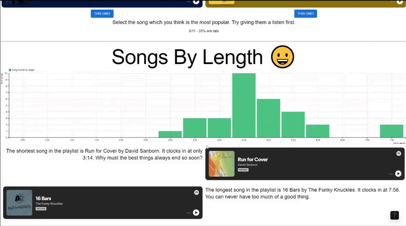

Senior Project – Interactive Music Data Visualization

For my senior project, my team and I built a dynamic data visualization website that explores a user's music taste and listening habits.

We used the Spotify API to fetch detailed user data, including top tracks, genres, and listening history. With D3.js, we translated that raw data into visual stories—like radial graphs showing genre diversity over time, or bar charts comparing artist frequency. The result was a playful, personalized interface that turns listening habits into a visual fingerprint of someone's musical identity.